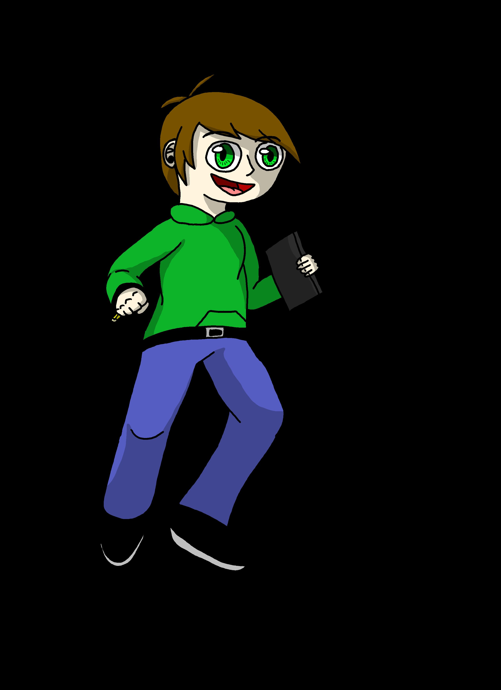
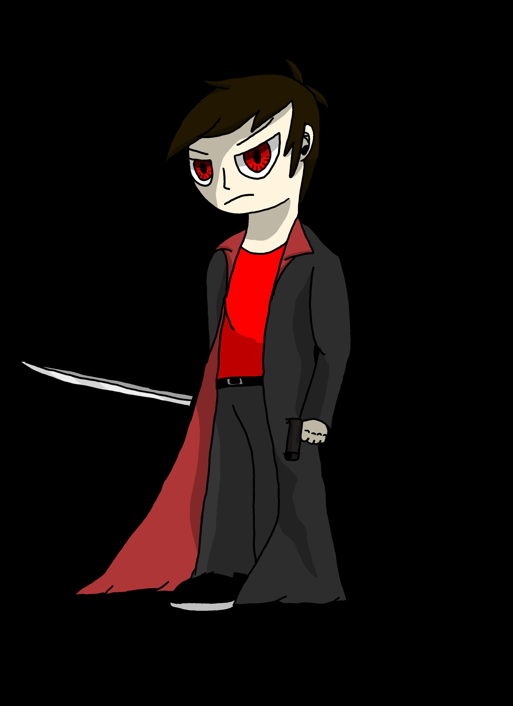

Every Day Life
Story
Evey Day Life depicts the life and struggles of Nick as he has to deal with exhausting mornings, overpriced merchandice, occult people trying to steal his sketch book, love life, and general miss understandings. This story and charcters were concived back in 2013 and was offically posted to webtoons on June 5th, 2018.
Character Bios
- 
Nick
The main charater of "Every Day Life". He is a strugling artist who has a love of anime and cartoons. He gets into lots of trouble due to his ADHD, however some of them he is unaware of. Always waking up late in the morning feeling less energized than the day befor while always going to sleep early, he turns in his manuscripts on time. His true journy begins when he finds a sketch book in an old chinese shop, and cloaked figures start chasing him down for no reason. This has more or less become rutine at this point and he dosent mind it now, but it is strange that his life has become more dangorus as he meets new people every day.
- 
Dark Nick
Created from Nicks subconcious as a way to protect him and solve any problems he has. You could say that he is an alternate personality but he lacks all of Nick's artistic talent and joyful nature. When anyone has a problem with Nick, its usually because they met his dark counterpart. Coming out when Nick sleeps, he takes on dangerous mercinary jobs while using a magic cloak that can carry prity much anything he puts in it, as well as duplicate them, any mark he is after are taken out swiftly and securly. Its only recently that his rewards escape him as someone else has been betting him to the punch.